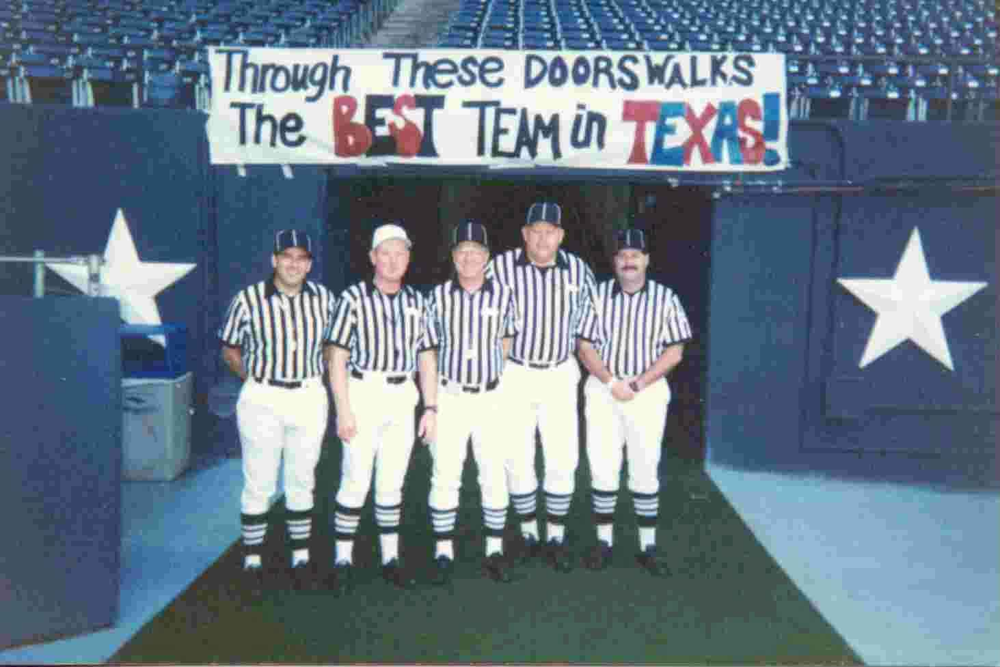

The Amarillo Chapter, Texas Football Officials Association is an organization of football officials covering the Texas Panhandle. They have dedicated themselves to the great game of Football! Our chapter strives for continual education, service and accountability to the game by presenting:
Speakers Series, Mechanics Clinics, Rules Workshops, and Clinics
We take pride in supporting the youth of the Texas who strive to improve their talents as rigorous competitors throughout their formative years. It is our responsibility to protect the integrity of the game. If you are interested in joining the Amarillo Chapter, Texas Association of Sports Officials -- Football or for information about the chapter, email the Chapter Secretary. By becoming a member of the Amarillo Chapter, Texas Association of Sports Officials -- Football, you will experience the benefits of camaraderie, active participation and career opportunities. We encourage fair play, sportsmanship and a closer relationship among officials, schools, athletic directors, administrators, players, coaches and fans. Our By Laws are located here. To see the Amarillo Chapter's meeting schedule click Meetings for a complete listing of all local meetings. We encourage new members, coaches and interested fans to attend any and all of our meetings.
